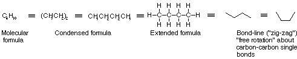
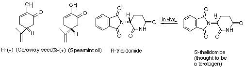
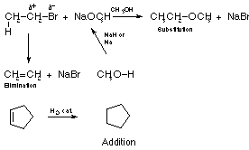

Notation of Organic ChemistryInorganic chemistry has an equational notation which can be decorated with attributes like heat of fusion and the like. Organic chemistry has, in addition, a spatial aspect to it. Paper (and displays) are restricted to two actual dimensions although various tricks like perspective can increase the apparent dimensionality. The first display below shows the various notations as more information is added to the formula.   
ReferencesCreated: Monday, September 20, 1999Last modified: March 27, 2002 email: McKeeman{at}Mathworks{dot}COM |